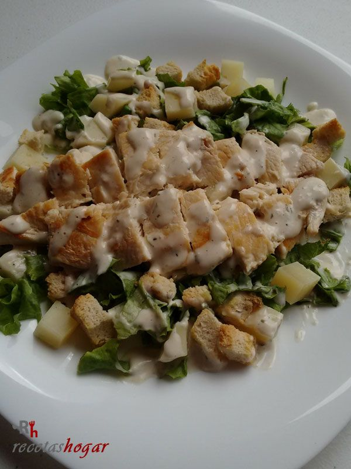

Ensalada Cesar

Descripción
La ensalada César combina vegetales frescos, crutones crujientes y queso parmesano con
un aderezo cremoso que le aporta un sabor característico.
Es una excelente opción como entrada o como plato principal si se acompaña con pollo
a la parrilla.
Ingredientes
- 1 lechuga romana
- 100 g de queso parmesano
- Crutones
- 1 pechuga de pollo (opcional)
- Aderezo César
- Pimienta negra
Pasos
- Lavar y cortar la lechuga.
- Cocinar el pollo y cortarlo en tiras.
- Colocar la lechuga en un recipiente.
- Agregar el pollo.
- Incorporar los crutones.
- Añadir el queso parmesano.
- Mezclar con el aderezo.
- Servir inmediatamente.
Página principal